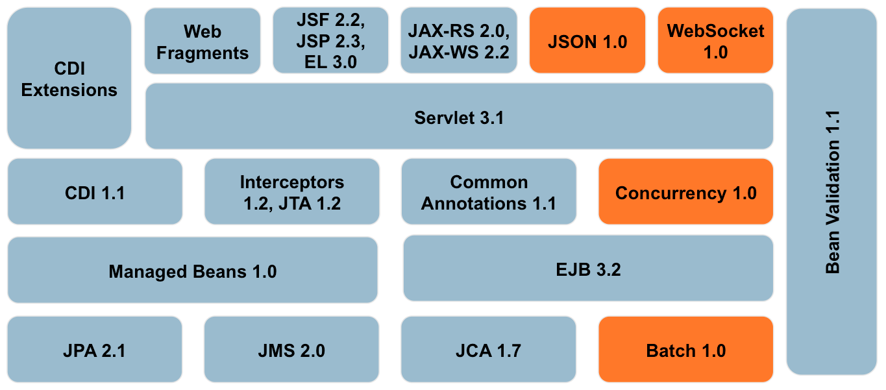
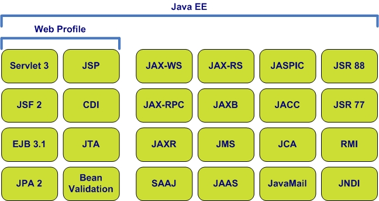
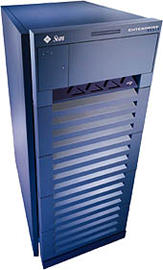
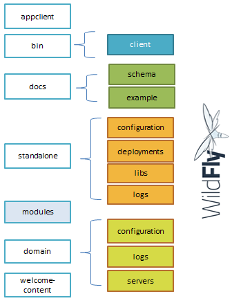
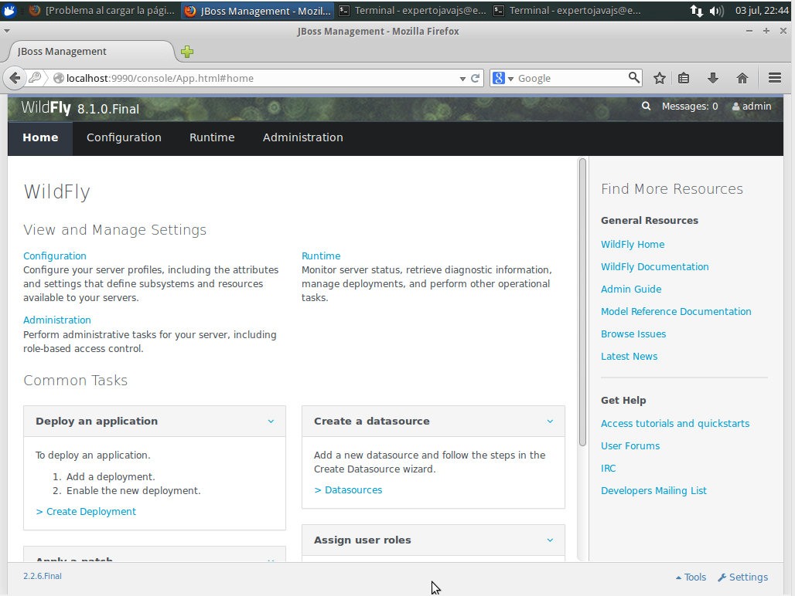
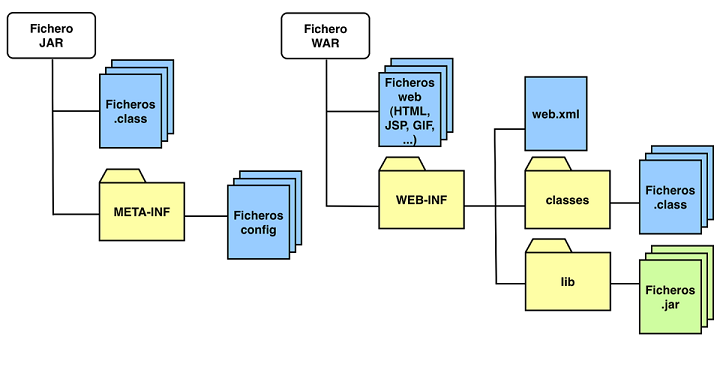
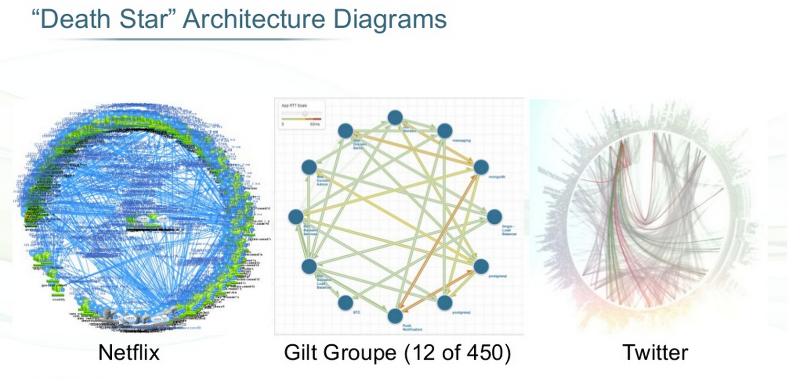

Servidores Web y PaaS
Sesión 1: Introducción a los servidores de aplicaciones y a WildFly
Índice
- Definición de servidor de aplicaciones
- Tomcat vs servidor de aplicaciones
- Evolución Java EE
- Introducción a WildFly
- Dominios en WildFly
- Estructura de directorios
- Herramientas de administración de WildFly
- Administración de dominios básica
- Empaquetado de aplicaciones Enterprise
- Desplegue de aplicaciones en WildFly
- Arquitecturas basadas en microservicios
¿Qué es un servidor de aplicaciones?
Un servidor de aplicaciones es una plataforma que proporciona los servicios definidos en la especificación de Java Enterprise.
Especificación Java Enterprise

Servicios más importantes
- Contenedor de aplicaciones web servlets y JSP.
- Servicios JAX-WS JAX-RS.
- Contenedor de EJBs y CDI.
- Gestión de recursos Java EE: JavaMail, JNDI, DataSources, Destinos JMS.
- Seguridad: JACC (Java Authorization Contract for Containers)
Web Profile vs Full Profile

¿Tomcat o Jetty son servidores de aplicaciones?
- No cumplen la especificación Java EE al completo (ni web profile ni full profile).
- Estrictamente hablando son servidores web y contenedores de servlets.
- Incorporan algunos servicios: JNDI, gestión de recursos.
- Su ligereza y sencillez de configuración.
- De uso gratuito.
- Combinado con un framework como Spring permite desplegar aplicaciones empresariales complejas. (Spring boot)
TomEE sí puede considerarse un servidor de aplicaciones (certificación JEE 6 Web Profile).
¿Cuándo utilizaremos un servidor de aplicaciones frente a Tomcat?
- Cuando escalabilidad, alta disponibilidad, monitorización del rendimiento y seguridad sean elementos críticos
- Cuando busquemos una plataforma estable y estandarizada que incluya todas las librerías necesarias para desarrollar según el estándar JEE.
- En organizaciones donde se separe la administración de sistemas de los equipos de desarrollo.
Lenta adopción de Java EE 7

Evolución Java EE
- Funcionamiento similar a un mainframe.
- Licencias costosas, desarrollo complejo y elevado consumo de recursos.

- Spring sirve de revulsivo para evolucionar: desarrollo simplificado, arquitecturas más ligeras, reducción de costes.
Introducción a WildFly
WildFly es la continuación del producto JBoss 8.x. Frente a las versiones anteriores (JBoss AS 7.1 y EAP6) presenta las siguientes novedades:
- Compatible y optimizado para la JVM de Java SE 7. Mejoras de rendimiento en Entrada/Salida, políticas de Garbage collector y concurrencia.
- Certificado para Java EE 7 Web y Full Profile.
- RBAC. Roles dentro de los usuarios con acceso WildFly, similares a los definidos por Java EE. Permiten delimitar tareas.
- Actualmente se encuentra en desarrollo la version WildFly 10: Uso Java 8, HTTP/2, server side scripts.
Introducción a WildFly
- Nuevo contenedor web y de servlets. Tomcat --> Undertow.
- Mejoras en las herramientas de administración (Consola, línea de comandos).
- Utiliza sólo 2 puertos, trabajo y administración. Facilita el ejecutar múltples instancias en una sola máquina.
- Aún no existe una versión con soporte comercial, únicamente open source gratuita
Cómo instalar WildFly
- Descargar desde http://www.wildfly.org
- Descomprimir en una carpeta.
- export JBOSS_HOME=/usr/share/wildfly-8.1.0
Dominio: define un conjunto de propiedades, recursos e instancias de servidores de aplicaciones.

Dominio
- Organización flexible de recursos y servidores.
- Cada dominio activo utiliza distintos puertos de servicio y administración.
Modos de trabajo de WildFly
- Standalone: Permite ejecutar WildFly como un proceso independiente. Compatible con HA.
standalone.sh
- Managed Domain: permite ejecutar uno o varios servidores administrados desde un único dominio.
domain.sh

Estructura de directorios de WildFly

Creación de un usuario administrador
- Paso necesario antes de poder comenzar a trabajar sobre WildFly
- Script add-user.sh
- El usuario creado pertenecerá al ManagementRealm

» Herramientas de administración de WildFly
Edición manual de los ficheros de configuración
- Técnicamente posible aunque cualquier cambio implica reiniciar el servidor.
- En caso de error el servidor puede no arrancar.
- Se trata de un último recurso.
- Para JBoss/WildFly sin embargo es más que un último recurso...
Consola web

Command Line Interface (CLI)
$ ./jboss-cli.sh [--help] [--version] [--connect] [--controller] [--commands] [--user] [--password]
[--file]
--help: Muestra un listado de comandos admitidos
--version Muestra información de la versión de WildFly y de la máquina.
--connect Comando utilizado para conectarnos al servidor e iniciar su administración.
--controller Host:puerto al que nos queremos conectar.
Command Line Interface (CLI)
$ ./jboss-cli.sh [--help] [--version] [--connect] [--controller] [--commands] [--user] [--password]
[--file]
--commands Permite especificar una o varias instrucciones de administración.
--user/password Credenciales para conectarse a un servidor, utilizadas normalmente al acceder a un servidor remoto.
--file Permite ejecutar un script con múltiples instrucciones de administración.
Ejemplos de uso
#Conexión a un servidor local (localhost:9990)
./jboss-cli.sh --connect
#Conexión a un host controller remoto
./jboss-cli.sh --connect --controller=192.168.10.1 --user=admin1234 --pasword=pass1234
#Ejecutar una secuencia de comandos
./jboss-cli.sh --commands="connect,deploy prueba.jar"
#Ejecutar un script de administración
./jboss-cli.sh --file=myscript.cli
#Parar el servidor
./jboss-cli.sh --connect --command=shutdown
#Arrancar el servidor en modo administración
./standalone.sh --admin-only
Para salir del modo administración:
[standalone@localhost:9990/]reload --admin-only=false
Ejemplo de script
# Connect to Wildfly instance
connect
# Create Spring Batch Module
module add \
--name=org.springframework.batch \
--dependencies=javax.api,javaee.api \
--resources=${wildfly.module.classpath}
Navegación CLI

Interfaz gráfico para CLI
$ ./jboss-cli.sh --gui

» Empaquetado de aplicaciones Java Enterprise
Ficheros JAR y WAR

Ficheros JAR y WAR
- Los ficheros JAR contienen clases Java compiladas junto con un manifest que identifica su contenido.
- Un archivo WAR contiene recursos estáticos y clases compiladas, pero también puede depender otros módulos (JAR’s) propios o de terceros.
- Podemos resolver estas dependencias incluyendo los JAR en el CLASSPATH del servidor, o bien incluyéndolos en el propio WAR, en la carpeta WEB-INF/lib
Limitaciones de los WAR
- Las dependencias de las aplicaciones Web se guardan en la carpeta /WEB-INF/lib de la aplicación. ¿Que ocurre si varias aplicaciones necesitan las mismas librerías?
- Duplicar las librerías provoca mayor complejidad en los mantenimientos y consumo extra de recursos.
- Dos soluciones estándar: Definir un módulo global o bien empaquetar estas aplicaciones en un fichero EAR.
Ficheros EAR

Ficheros EAR
- Las aplicaciones enterprise constan de una o más aplicaciones web y distintos componentes compartidos: librerías de clases u objetos EJB.
- Control unificado (despliegue, arranque, parada...).
- Los ficheros JAR compartidos ya no tienen que desplegarse repetidos, se ubicarán en el EAR en la carpeta /lib.
- Las clases Java serán accesibles desde el classpath de cualquier aplicación web empaquetada en él.
- Descriptor des despliegue application.xml opcional.
Dependencia básica Maven
<dependencies>
<dependency>
<groupId>javax</groupId>
<atifactId>javaee-api</artifactId>
<version>7.0</version>
<scope>provided</scope>
</dependency>
</dependencies>
» Despliegue de aplicaciones en WildFly
1.- Despliegue desde sistema de ficheros
- Sólo en modalidad standalone
$ cp example.war /usr/local/wildfly-8.1.0.Final/standalone/deployments
1.- Despliegue desde sistema de ficheros
Deployment scanner
<deployment-scanner scan-interval="5000" relative-to="jboss.server.base.dir"
path="deployments" auto-deploy-zipped="true" auto-deploy-exploded="false"/>
2.- Mediante herramientas de administración
- Consola Web

2.- Mediante herramientas de administración
- CLI
$ [standalone@localhost:9990/]deploy example.war
3.- Mediante herramientas de terceros
- wildfly-maven-plugin
[standalone@localhost:9990/]mvn wildfly:deploy
[standalone@localhost:9990/]mvn wildfly:redeploy
[standalone@localhost:9990/]mvn wildfly:undeploy
3.- Mediante herramientas de terceros
- wildfly-maven-plugin
org.wildfly.plugins
wildfly-maven-plugin
1.0.2.Final
install
deploy
Arquitecturas basadas en microservicios
Una arquitectura basada en microservicios es una forma de entender las aplicaciones como un conjunto de pequeños servicios, cada uno ejecutándose como proceso independiente y comunicándose con el resto mediante mecanismos sencillos y "agnósticos", a menudo HTTP.
Arquitecturas basadas en microservicios
Estos servicios se diseñan sobre funciones de negocio y siguen estrategias de de despliegue independientes. Aunque se trate de servicios independientes suele existir una pequeña lógica de administración común para estos servicios, que pueden estar construidos usando distintos lenguajes de programación y diferentes tecnologías de almacenamiento.
Martin Fowler
Arquitecturas basadas en microservicios

Arquitecturas basadas en microservicios
- Filosofía contrapuesta a las grandes aplicaciones "Monolíticas" y centralizadas.
- El término micro hace referencia a implementar una función muy determinada, no al tamaño.
- Podría entenderse como un SOA 2.0 o SOA pragmático.
- Protocolos pesados y lógica centralizada vs Protocolos ligeros y lógica en los endpoint.
Beneficios de una arquitectura basada en microservicios
- Facilidad para escalar el desarrollo.
- two-pizza team
- full stack development
- Aislamiento ante fallos.
- Despliegues más frecuentes y con menor riesgo.
- Elimina la dependencia a largo plazo de una tecnología.
¿Tiene inconvenientes?
- Fundamentalmente una mayor complejidad

Otros inconvenientes
- Requieren cultura DevOps en la empresa.
- Falta de herramientas.
- Comunicación y coordinación entre equipos.
Debemos pensar en microservicios si...
- Desarrollamos una aplicación monolítica compleja de gestionar.
- Se aplican de forma intensiva buenas prácticas:
- S.P.R. Principio de responsabilidad única.
- D.D.D. Diseño dirigido por el dominio.
- Queremos reducir las dependencias de tecnologías concretas.
- Queremos mejorar la productividad escalando el desarrollo de los equipos.
Productividad vs Complejidad

Java EE y los microservicios
- Java EE ha evolucionado lo suficiente como para cambiar a un paradigma opuesto a sus orígenes
- Servidores de aplicaciones: consumo de recursos reducido y grandes beneficios de estandarización. "No reinventar la rueda".
- Estrategias de desarrollo orientadas a microservicios
- 1 Dominio - 1 Servidor - 1 WAR
- WAR ligeras: autocontenidas, sin sobrecargas de módulos, aprovechamiento de las librerías del servidor
- Estructuración del código: Convención sobre declaración, reducir el uso de interfaces, centrarse en el negocio.
Microservicio minimalista
@Path("cursos")
public class CursosResource {
@GET
@Produces("application/json")
public JsonObject all(){
return Json.createObjectBuilder().add("cursos","JavaEE, JavaScript, MongoDB").build();
}
}
Contenerización
- En 2013 aparece un gran aliado para las arquitecturas basadas en microservicios.

http://dockersim.com/